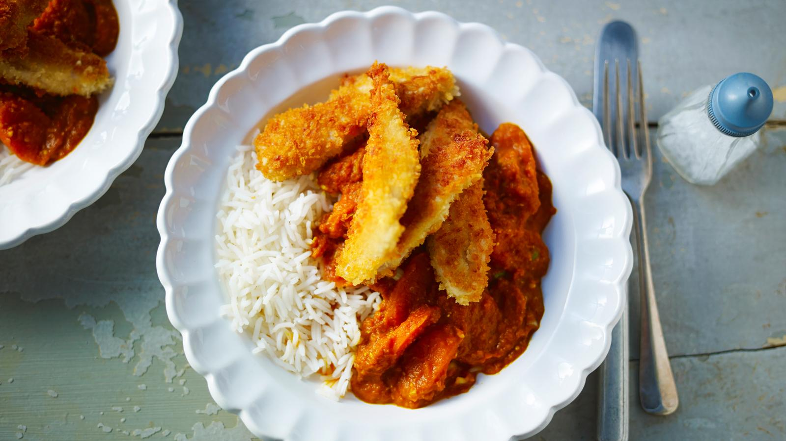

Chicken Katsu Curry

Description
A low-cost and simple Japanese dish. The perfect midweek meal.
Ingredients
- 1 brown onion, chopped
- 1 carrot, chopped
- 1 tbsp sunflower oil
- 2 garlic cloves, crushed
Steps
- To make the sauce, put the onion, carrot and oil into a saucepan and cook over a low to medium heat for 4 to 5 minutes, stirring frequently, until soft but not coloured.
- Add the garlic, ginger and curry powder and cook for a minute, stirring often. Add the flour, mix well and cook for a further 30 seconds. Gradually add the stock, stirring constantly. Bring slowly to the boil, reduce to a simmer and cook gently for 10 minutes until smooth and thickened.
- Blend the sauce until smooth using a stick blender and season to taste with soy sauce, salt and pepper.